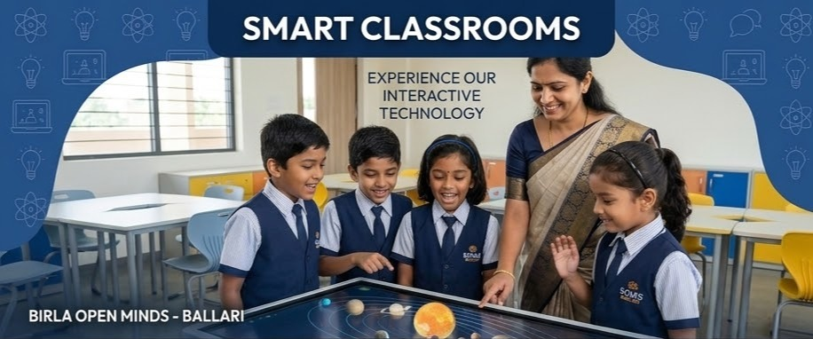

Smart Classrooms, Sports & Safety: How the Best School in Ballari Raises Exceptional Children

A thoughtful look at what holistic education actually means — and how BOMIS Ballari delivers it through facilities, curriculum, and values that go far beyond textbooks.
Ask any parent in Ballari what they want for their child’s school, and you will hear the same three things: safety, quality teaching, and opportunities beyond academics.
These are not extras. They are the foundation. And they are precisely what separates a good school from a great one.
When families search for the “best school in Ballari”, they are rarely just comparing boards or fees. They are asking something deeper: Will this school help my child become someone remarkable?
At Birla Open Minds International School (BOMIS), Ballari, that question guides every decision — from classroom design to transport safety to the music room at the end of the corridor.
“A truly great school is not built on a single strength. It is built on multiple pillars, each reinforcing the others.”
The 6 Pillars of Excellence at BOMIS Ballari
Our commitment to excellence is reflected in our infrastructure, our educators, and our unwavering focus on child safety and development.
Why “Holistic Development” Actually Matters
Every school in India claims to offer holistic development. Very few define what that actually means. At its core, holistic development means a child grows in four key dimensions simultaneously:
🎓 ACADEMIC – Intellectual Growth
Strong conceptual understanding through CBSE curriculum, smart classroom technology, and trained, engaged teachers — not just syllabus completion, but real learning.
🏃 PHYSICAL – Fitness & Discipline
Structured sports programs build resilience, teamwork, discipline, and life skills beyond exams.
🎨 CREATIVE – Artistic Expression
Music, dance, and arts enhance brain development, emotional intelligence, and academic performance.
🤝 SOCIAL – Emotional Intelligence
A safe, nurturing environment where children learn communication, empathy, and collaboration.
Facilities & Features at BOMIS Ballari
- Smart Classrooms: Equipped with interactive digital boards for immersive learning
- Specialized Sports Programs: Dedicated focus on physical development and resilience
- Campus-wide CCTV Monitoring: Ensuring a safe and secure environment for every child
- Music & Dance Rooms: Creative spaces for artistic growth and expression
- Air-Conditioned Transport: Safe, comfortable travel with constant supervision
- Backed by Birla Edutech Limited: World-class educational standards and expertise
“A school is not just a place for education — it is where a child’s identity begins to take shape.”
Final Thought
At BOMIS Ballari, the goal is not just to create good students, but to nurture confident, capable, and well-rounded individuals ready for the future.
Experience Excellence Firsthand
Visit our campus today and see how we are raising exceptional children in the heart of Ballari.